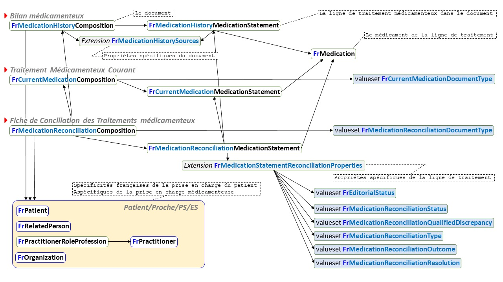

Guide d'implémentation du médicament - Local Development build (v0.1.0) built by the FHIR (HL7® FHIR® Standard) Build Tools. See the Directory of published versions
La conciliation - Vue d'ensemble
Vue d’ensemble
Implémentation
Les 3 documents de la conciliation sont implémentés chacun sous forme d’une ressource Bundle de type document.
Selon le document, la composition du Bundle est
Pour la conciliation rétroactive d’admission,
Les 3 documents supports de la conciliation

Les ressources profilée par Interop’Santé
Le profilage de ces ressources répond aux recommandations du guide méthodologique de mise en œuvre de la conciliation médicamenteuse publié par la Haute Autorité de Santé.
La FCT fait référence au bilan médicamenteux (le traitement médicamenteux du patient avant hospitalisation) et au traitement médicamenteux courant (le traitement médicamenteux en cours lors de l’hospitalisation). De ce fait, le profil FrCurrentMedicationComposition a été défini pour rendre compte de ce traitement médicamenteux courant.
Dépendance des ressources profilés par Interop’Santé

Le profil FrOnAdmissionRetroactiveMedicationReconciliationComposition contraint le profil général FrMedicationReconciliationComposition pour répondre au cas particulier de la conciliation rétroactive d’admission. Il référence un cas particulier de traitement médicamenteux courant, l’ordonnance médicale d’admission (OMA), ordonnance adressée par le profil FrOnAdmissionMedicationComposition qui contraint le profil général FrCurrentMedicationComposition.

Ressources
Profils
- FrMedicationHistoryComposition
- Type: Composition
- Composition du Bundle portant le document FHIR Bilan Médicamenteux
- Référence
- l’extension FrMedicationHistorySource pour décrire le sourcing du bilan
- la ressource FrMedicationHistoryMedicationStatement pour décrire chaque ligne du bilan
- Est référencé par le Bundle du type document portant le Bilan Médicamenteux
- FrMedicationHistoryMedicationStatement
- Type: MedicationStatement
- Ligne du Bilan Médicamenteux
- Référence
- l’extension FrMedicationHistorySource pour décrire le sourcing de la ligne
- la ressource FrMedication pour décrire le médicament impliqué dans la ligne
- Est référence par
- FrMedicationHistoryComposition
- FrMedicationReconciliationMedicationStatement
- FrCurrentMedicationComposition
- Type : Composition
- Composition du Bundle portant le document FHIR Traitement Médicamenteux courant (traitement hospitalier)
- Référence la ressource FrCurrentMedicationMedicationStatement
- Est référencé par le Bundle du type document portant le Traitement Médicamenteux courant (traitement hospitalier)
- FrCurrentMedicationMedicationStatement
- Type: MedicationStatement
- Ligne du Traitement Médicamenteux courant (traitement hospitalier)
- Référence la ressource FrMedication pour décrire le médicament impliqué dans la ligne
- Est référence par
- FrCurrentMedicationComposition
- FrMedicationReconciliationMedicationStatement
- FrMedicationReconciliationComposition
- Type: Composition
- Composition du Bundle portant le document FHIR Fiche de Conciliation des Traitements (FCT)
- Référence
- la ressource FrMedicationReconciliationMedicationStatement pour décrire chaque ligne de la fiche
- la ressource FrMedicationHistoryComposition pour décrire le bilan médicamenteux objet de la conciliation
- la ressource FrCurrentMedicationComposition pour décrire pour décrire le traitement médicamenteux hospitalier courant objet de la conciliation
- Est référencé par le Bundle du type document portant la FCT
- FrMedicationReconciliationMedicationStatement
- Type: MedicationStatement
- Ligne de traitement médicamenteux de la Fiche de Conciliation des Traitements (FCT)
- Référence
- l’extension FrMedicationStatementReconciliationProperties pour décrire les propriétés de conciliation de la ligne
- la ressource FrMedication pour décrire le médicament impliqué dans la ligne
- FrMedication
- Type: Medication
- Le médicament d’une ligne du Bilan Médicamenteux ou du Traitement Médicamenteux courant ou de la FCT
- Est référencée par
- FrMedicationHistoryMedicationStatement
- FrCurrentMedicationMedicationStatement
- FrMedicationReconciliationMedicationStatement
- FrOnAdmissionMedicationComposition
- Type: Composition
- Composition du Bundle portant le document FHIR Ordonnance Médicamenteuse d’Admission (OMA)
- C’est un cas particulier de Traitement Médicamenteux Courant, qui fixe le type du document à : à l’admission
- FrOnAdmissionRetroactiveMedicationReconciliationComposition
- Type: Composition
- Composition du Bundle portant le document FHIR Fiche de Conciliation rétroactive des Traitements à l’admission
- C’est un cas particulier de FCT, qui fixe le type du document à : rétroactvie à l’admission
Extensions
- FrMedicationHistorySources
- Type: complex
- Sourcing du Bilan Médicamenteux et de la ligne du Bilan Médicamenteux
- Nombre de sources (quel que soit leur nombre)
- ET la liste de ces sources définies par leur type
- et, éventuellement,
- leur auteur identifié ès qualités
- et, de préférence, également nominativement.
- Figure dans
- l’élément section de la ressource FrMedicationHistoryComposition, elle y est dénommée compositionSourcing
- la ressource FrMedicationHistoryMedicationStatement, elle y est dénommée statementSourcing
- FrMedicationStatementReconciliationProperties
- Type: complex
- Propriétés de conciliation d’une ligne de traitement médicamenteux dans une Fiche de Conciliation des Traitements médicamenteux (FCT)
- statut de divergence sur la ligne de traitement
- identification oui/non d’une divergence sur la ligne de traitement
- qualification de la divergence identifiée sur la ligne de traitement
- commentaires libres (documentation) de la ligne de traitement
- type de l’écart/erreur entre Bilan et Traitement Courant pour la ligne de traitement
- gravité estimée de la divergence identifiée sur la ligne de traitement
- résolution de la divergence identifiée sur la ligne de traitement
- Figure dans la ressource FrMedicationReconciliationMedicationStatement, elle y est dénommée reconciliation
ValueSets
CodeSystems